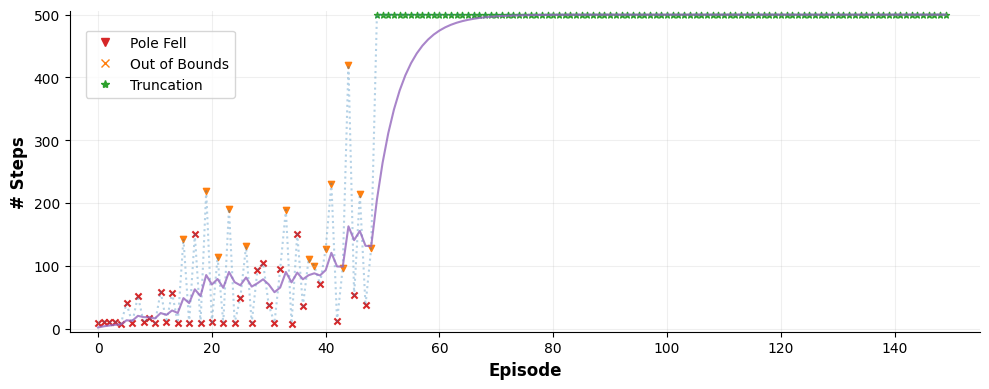

Tutorial #6: Solving the CartPole™#
Now it is the time to wrap all that we have learned so far and use Spark to solve one of the most iconic problems in reinforcement learning: the CartPole™.
The CartPole is a simple control problem in which a pole is attached by an un-actuated joint to a cart, which moves along a frictionless track. The pendulum is placed upright on the cart and the goal is to balance the pole by applying forces in the left and right direction on the cart.
In order to solve the network, we require a neuron model capable of not only processing spikes, but also capable of receiving a signal like a reward in order to modulate its synaptic plasticity dynamics. For this case we will use a simple ALIF neruon (Adaptive-Leaky-Integrate-and-Fire). We will also add a modulated versions of a classical plasticity protocol known as the “quadruplet rule”, which we are going to populate with parameters from: Plasticity Cards®, a collection of parameters for the quadruplet rule that tends to produce stable dynamics. We took the liberty to prepare this neuronal model in advance (which will later appear as spark.ALIFModNeuron) and pack it into a file!.
Considering the action space for the CartPole problem, the brain needs to be capable on picking two actions: “move left” or “move right” depending on the current state of the cart. The input to the problem are four bounded float values: position, velocity, pole angle and pole angular velocity. Given the very nature of these values (they are continuous values that may be represented by segments of a line), we can use a spark.nn.interfaces.TopologicalLinearSpiker to map these values to an spiking pattern along a line (akin to grid cells!). For the core of the network, an “A vs B” design pattern will naturally induce a choice of left or right. This pattern may be summarized as: each population tries to main a high level of activity and supress the activity of the other population if it “believes” that it needs to act. Finally, for the output of the network, we can simply take the activity of A and B and pick which ever is more active at the present moment. In order to accomplish this, we will once again use the spark.nn.interfaces.ExponentialIntegrator and pick the action associated with most active population.
Overall, the plan is:
Design a neuron model that may be modulated via rewards.
Assamble everything into a brain.
Train the model
Profit!
For this tutorial we prepared two files: alif_mod_neuron.scfg and ab_brain.scfg for the neuron and the brain respectively. You can find these two files in the main repository under the directory /tutorials.
Let’s start by looking at the neuron model.
import spark
# Imports
%gui qt
import jax
import spark
import numpy as np
import jax.numpy as jnp
NEURON_PATH = './alif_mod_neuron.scfg'
BRAIN_PATH = './ab_brain.scfg'
editor = spark.GraphEditor()
# Feel free to explore the neuron model!
#if __name__ == "__main__":
# editor.open_model(NEURON_PATH)
And the brain…
try:
config_instance = spark.nn.BrainConfig.from_file(BRAIN_PATH)
except Exception as e:
print(f'Oh no: {e}!')
Oh no: ERROR: Could not read file "./ab_brain.scfg". Reason: An unexpected error ocurred when trying to decode... 418 I'm a teapot.Error: 'There is no module with name "alif_mod_neuron" in the registry.'!
The previous behavior is expected since the Brain is using the neuronal model from the file, which is a custom neuron that is not part of the standard models available in Spark. We will not be able to use directly this model inside a Brain because Spark does not know it exists!
Fortunately, it is trivial to fix this issue. However, this needs to be done every time you want to use a custom Neuron model either in a Brain or in the Graph Editor (before you launch it!).
# We can either register the neuron directly from the file
try:
spark.register_neuron_from_config_file('ALIFModNeuron', NEURON_PATH)
except Exception as e:
print(f'(File) Oh no: {e}!')
# Or from a live instance
try:
brain_config = spark.nn.NeuronConfig.from_file(NEURON_PATH)
spark.register_neuron_from_config('ALIFModNeuron', config_instance)
except Exception as e:
print(f'(Instance) Oh no: {e}!')
(Instance) Oh no: name 'config_instance' is not defined!
Note that after this simple instruction, the ALIFModNeuron model is now available in the editor both, as a compact reference when building a brain or as a full editable model when building a Neuron!. Furthermore, we can also inspect the brain model directly and tune it’s parameters.
try:
brain_config = spark.nn.BrainConfig.from_file(BRAIN_PATH)
print(f'Infinite success!')
except Exception as e:
print(f'Oh no: {e}!')
Infinite success!
# You may also tinker with the brain model!
#if __name__ == "__main__":
# editor.open_model(BRAIN_PATH)
With this, we are now ready to build the brain and attack the CartPole problem!
As usual, we need to define the functions to run the model efficiently. Up to this point we have been making single calls to the model. However, this approach will quickly become highly innefficient, since SNN are expected to integrate the output, diggest it for some time and then output an answer (ideally whenever they managed to get the answer, but this is easier said than done).
In Spark, we refer to this concept as “interaction times”, which is simply the number of time steps we let the model process the input before trying to retrieve an answer. There is two ways to implement this, with loops as we saw in the one of the first tutorials or by unrolling (the Jax™ way).
from functools import partial
@partial(jax.jit, static_argnames=['steps', 'modulation_decay'])
def run_model_loop(graph, state, steps, modulation_decay, **inputs):
# Merge model
model = spark.merge(graph, state)
# Run model
for _ in range(steps):
out = model(**inputs)
# Modulation decay.
inputs['mod_a_ex'] = spark.FloatArray(jnp.array(modulation_decay * inputs['mod_a_ex'].value, dtype=jnp.float16))
inputs['mod_a_in'] = spark.FloatArray(jnp.array(modulation_decay * inputs['mod_a_in'].value, dtype=jnp.float16))
inputs['mod_b_ex'] = spark.FloatArray(jnp.array(modulation_decay * inputs['mod_b_ex'].value, dtype=jnp.float16))
inputs['mod_b_in'] = spark.FloatArray(jnp.array(modulation_decay * inputs['mod_b_in'].value, dtype=jnp.float16))
# Get new state
_, state = spark.split((model))
return out, state
@partial(jax.jit, static_argnames=['steps', 'unroll', 'modulation_decay'])
def run_model_unroll(graph, state, modulation_decay, steps, unroll=15, **inputs):
def step_fn(carry_state, _):
# Unpack carry_state
(model_state, current_inputs) = carry_state
# Merge model
model = spark.merge(graph, model_state)
# Run model
out = model(**current_inputs)
# Modulation decay.
current_inputs['mod_a_ex'] = spark.FloatArray(jnp.array(modulation_decay * current_inputs['mod_a_ex'].value, dtype=jnp.float16))
current_inputs['mod_a_in'] = spark.FloatArray(jnp.array(modulation_decay * current_inputs['mod_a_in'].value, dtype=jnp.float16))
current_inputs['mod_b_ex'] = spark.FloatArray(jnp.array(modulation_decay * current_inputs['mod_b_ex'].value, dtype=jnp.float16))
current_inputs['mod_b_in'] = spark.FloatArray(jnp.array(modulation_decay * current_inputs['mod_b_in'].value, dtype=jnp.float16))
# Get new state
_, new_state = spark.split((model))
return (new_state, current_inputs), out
# Run the scan loop
(final_state, _), stacked_outs = jax.lax.scan(
step_fn,
(state, inputs),
xs=None,
length=steps,
unroll=unroll,
)
final_out = jax.tree.map(lambda x: x[-1], stacked_outs)
return final_out, final_state
Although both, the loop and the unroll approaches, will produce the same final model computation the actual computation performed is slightly different. The difference is just how the final computational graph is seen by the JIT compiler and how it is optimized. The for loop exposes “everything” to JIT, while the unroll just a fraction of that “everything”, which is them repeated over and over again. The end result is that the for loop compilation may take a really long time, while unrolling the computation is considerably faster. However, unrolling the computation produces a slightly less performant call to the function. Note that, how much is unrooled may be tweaked by the number of unrolling steps, and setting the number of unrolling equal to the toal steps will produce a program equivalent to the for loop. So, whatever floats your SNN.
Now, as usual in any reinforcement learning setup, we need to create a training loop.
# Reward metaparameters
PASSIVE_MODULATION_SCALE = -0.0001
REWARD_FALL_SCALE = -25
REWARD_OOB_SCALE = -25
REWARD_OOB_THRESHOLD = 0.05
NEG_REWARD_SCALE = -0.1
MOD_INHIBITION_SCALE= 0.25
# Model metaparameters
DT = 1
MODULATION_DECAY = float(np.exp(-DT / 0.5))
TRAIN_EPOCHES = 150
UNROLL = 15
STEPS = int(50/DT)
# Utility function to preprocess information from the environment.
# This function just scale the observation environment to the (0,1) range.
def process_obs(x):
# CartPos, CartSpeed, PoleAngle, PoleAngSpeed
x = x / np.array([2.4, 2.5, 0.2095, 3.5])
x = np.clip(x, a_min=-1, a_max=1)
return x
def run_episode(env, graph, state, modulation_scale, modulation_decay, steps, unroll):
# Reset environment
next_obs, _ = env.reset()
next_obs = process_obs(next_obs)
# Loop until the episode ends, either from failing or truncation
terminated = False
truncated = False
episode_steps = 0
# Allow the network to prepare for the episode.
for _ in range(1):
inputs = {
'signal': spark.FloatArray(jnp.zeros_like(next_obs, dtype=jnp.float16)),
'mod_a_ex': spark.FloatArray(jnp.array([0], dtype=jnp.float16)),
'mod_a_in': spark.FloatArray(jnp.array([0], dtype=jnp.float16)),
'mod_b_ex': spark.FloatArray(jnp.array([0], dtype=jnp.float16)),
'mod_b_in': spark.FloatArray(jnp.array([0], dtype=jnp.float16)),
}
_, state = run_model_unroll(
graph, state, modulation_decay=0, steps=steps, unroll=unroll, **inputs
)
# Start episode
while not (terminated or truncated):
# Model logic, let the network do what it wants to do.
passive_modulation = PASSIVE_MODULATION_SCALE * modulation_scale
inputs = {
'signal': spark.FloatArray(jnp.array(next_obs, dtype=jnp.float16)),
'mod_a_ex': spark.FloatArray(jnp.array([passive_modulation], dtype=jnp.float16)),
'mod_a_in': spark.FloatArray(jnp.array([passive_modulation * MOD_INHIBITION_SCALE], dtype=jnp.float16)),
'mod_b_ex': spark.FloatArray(jnp.array([passive_modulation], dtype=jnp.float16)),
'mod_b_in': spark.FloatArray(jnp.array([passive_modulation * MOD_INHIBITION_SCALE], dtype=jnp.float16)),
}
out, state = run_model_unroll(
graph, state, modulation_decay=1, steps=steps, unroll=unroll, **inputs
)
# Environment logic.
next_action = int(np.argmax(out['action'].value))
prev_episode = np.array(next_obs)
next_obs, _, terminated, truncated, _ = env.step(next_action)
next_obs = process_obs(next_obs)
episode_steps += 1
# Steer the network to what we want with one extra step with the last episode and the reward
if not truncated:
# Check if the agent went out of bounds.
out_of_bounds = np.abs(next_obs[0]) >= 1
# Critic-like action update
# Going out of bounds conflicts with learning to balance the pole, adding a second condition
# to check for the the pole to be mostly vertical improves learning speed
if out_of_bounds and np.abs(next_obs[2]) < REWARD_OOB_THRESHOLD:
# If the cart went out of bounds, we need to move the cart towards the center
# Going out of bounds is not as bad as the pole falling, so we should not put to much
# punishment towards that action
steer_to_b = next_obs[0] < 0
reward = REWARD_OOB_SCALE * modulation_scale
mod_a = reward if steer_to_b else NEG_REWARD_SCALE * reward
mod_b = reward if not steer_to_b else NEG_REWARD_SCALE * reward
else:
# If the pole fell, we need to move the cart towards the side it fell
steer_to_b = next_obs[2] > 0
reward = REWARD_FALL_SCALE * modulation_scale
mod_a = reward if steer_to_b else NEG_REWARD_SCALE * reward
mod_b = reward if not steer_to_b else NEG_REWARD_SCALE * reward
for _ in range(1):
inputs = {
'signal': spark.FloatArray(jnp.array(prev_episode, dtype=jnp.float16)),
'mod_a_ex': spark.FloatArray(jnp.array([mod_a], dtype=jnp.float16)),
'mod_a_in': spark.FloatArray(jnp.array([mod_a * MOD_INHIBITION_SCALE], dtype=jnp.float16)),
'mod_b_ex': spark.FloatArray(jnp.array([mod_b], dtype=jnp.float16)),
'mod_b_in': spark.FloatArray(jnp.array([mod_b * MOD_INHIBITION_SCALE], dtype=jnp.float16)),
}
_, state = run_model_unroll(
graph, state, modulation_decay=modulation_decay, steps=steps, unroll=unroll, **inputs
)
else:
out_of_bounds = False
return state, episode_steps, terminated, truncated, out_of_bounds
Now, let’s put all together and train the brain.
First, we create and configure the environment. Usually, the cartpole uses a continuous reward of one to provide continuous feedback to ANN models. We instead we are going to use a single -1 (which we will post-process) when the episode ends.
import ale_py
import gymnasium as gym
gym.register_envs(ale_py)
# Initialize the environment
env_name = 'CartPole-v1'
env = gym.make(env_name, sutton_barto_reward=True)
next_obs, _ = env.reset(seed=42)
next_obs = process_obs(next_obs)
As usual, we create a Brain, using the pre-defined configuration file and initialize it.
It is possible to generate a new seed for the model by simply calling config.with_new_seeds, rather than manually changing all seeds. However, this particular model is somewhat sensitive to kernel initialization, as such, final behavior may differ from seed to seed. For the sake of illustration, the default model contains one of the “good seeds”.
# Load the brain configuration
brain_config = spark.nn.BrainConfig.from_file(BRAIN_PATH)
# Reseed
#brain_config = brain_config.with_new_seeds(seed=42)
# Initialize the brain
brain = spark.nn.Brain(config=brain_config)
brain(
signal=spark.FloatArray(jnp.array(next_obs, dtype=jnp.float16)),
mod_a_ex=spark.FloatArray(jnp.array([0], dtype=jnp.float16)),
mod_a_in=spark.FloatArray(jnp.array([0], dtype=jnp.float16)),
mod_b_ex=spark.FloatArray(jnp.array([0], dtype=jnp.float16)),
mod_b_in=spark.FloatArray(jnp.array([0], dtype=jnp.float16)),
)
# Split brain into the graph and the state
graph, state = spark.split((brain))
import tqdm
# Some classic metrics
train_steps = []
ema_alpha, train_steps_ema = 0.8, []
current_train_ema_steps = 0
train_oob = []
# A classic training loop.
for e in (pbar := tqdm.tqdm(range(TRAIN_EPOCHES))):
# We scale the passive modulation in order to prevent a bad episode from drastically updating the network
modulation_scale = (1 - (current_train_ema_steps / 500))**(0.5)
# Run the episode
state, episode_steps, terminated, truncated, out_of_bounds = run_episode(
env,
graph,
state,
modulation_decay=MODULATION_DECAY,
modulation_scale=modulation_scale,
steps=STEPS,
unroll=UNROLL,
)
# Update the classic metrics
current_train_ema_steps = train_steps_ema[-1] if len(train_steps_ema) > 0 else 0
train_steps.append(episode_steps)
train_steps_ema.append(ema_alpha * current_train_ema_steps + (1-ema_alpha) * episode_steps)
pbar.set_description(f'Train Steps EMA: {train_steps_ema[-1]:.2f}')
if out_of_bounds:
train_oob.append(e)
Train Steps EMA: 500.00: 100%|██████████| 150/150 [03:43<00:00, 1.49s/it]
Finally, let’s visualize how does the agent performed!
import matplotlib as mpl
import matplotlib.pyplot as plt
from matplotlib.lines import Line2D
mpl.rcParams['axes.spines.right'] = False
mpl.rcParams['axes.spines.top'] = False
# Process data
s = np.arange(TRAIN_EPOCHES)
ts = np.array(train_steps)
x_oob = np.array(train_oob)
y_oob = ts[x_oob] if len(x_oob) > 0 else []
x_trnc = np.argwhere(ts == 500).reshape(-1)
y_trnc = 500*np.ones_like(x_trnc)
x_pole = [x for x in range(TRAIN_EPOCHES) if (x not in x_oob and x not in x_trnc)]
y_pole = ts[x_pole]
fig = plt.figure(figsize=(10,4))
# General curve
plt.plot(s, train_steps, alpha=1/3, linestyle=':')
plt.plot(s, train_steps_ema, color='tab:purple', alpha=0.8)
# Pole-fell
plt.scatter(x_pole, y_pole, color='tab:red', s=20, alpha=1, marker='x')
# Agent out-of-bounds
plt.scatter(x_oob, y_oob, color='tab:orange', s=20, alpha=1, marker='v')
# Episode truncated
plt.scatter(x_trnc, y_trnc, color='tab:green', s=20, alpha=1, marker='*')
# Format plot
plt.xlim(-5, TRAIN_EPOCHES+5)
plt.ylim(-5, 505)
plt.xlabel('Episode', fontweight='bold', fontsize=12)
plt.ylabel('# Steps', fontweight='bold', fontsize=12)
plt.grid(alpha=0.2)
plt.tight_layout()
legend_elements = [
Line2D([], [], color='tab:red', marker='v', linewidth=0, label='Pole Fell'),
Line2D([], [], color='tab:orange', marker='x', linewidth=0, label='Out of Bounds'),
Line2D([], [], color='tab:green', marker='*', linewidth=0, label='Truncation'),
]
fig.legend(handles=legend_elements, ncols=1, bbox_to_anchor=(0.165, 0.825), loc='center', frameon=True)
plt.show()

🎉 Congratulations! (again) 🎉
Now you have trained your first SNN that actually does something midly interesting!